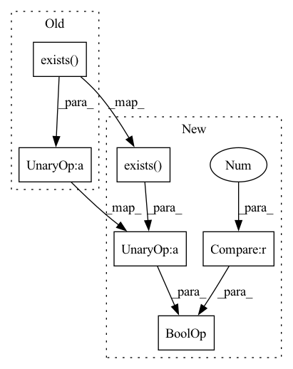

Pattern ID :3922
Before Change
def __call__(self, data: Dict) -> Dict:
src_path = Path(data[self.image_key])
tiff_path = self.get_tiff_path(src_path)
if not tiff_path.exists() :
self.convert_wsi(src_path, tiff_path)
return data
After Change
src_path = Path(data[self.image_key])
tiff_path = self.get_tiff_path(src_path)
// if the tiff file does not exist or if it exists but is empty, we convert the wsi to tiff
if not tiff_path.exists() or (tiff_path.exists() and tiff_path.stat().st_size == 0) :
self.convert_wsi(src_path, tiff_path)
return data
In pattern: SUPERPATTERN
Frequency: 3
Non-data size: 6
Instances Fragment ID: 14801009
Project Name: microsoft/hi-ml
Commit Name: 14b43222de9cf7d96680c267f08c83b346709098
Time: 2023-03-13
Author: 37396332+kenza-bouzid@users.noreply.github.com
File Name: hi-ml-cpath/src/health_cpath/preprocessing/tiff_conversion.py
M Class Name: ConvertWSIToTiffd
N Class Name: ConvertWSIToTiffd
M Method Name: __call__(2)
N Method Name: __call__(2)
M Parent Class: MapTransform
N Parent Class: MapTransform
M File Name: hi-ml-cpath/src/health_cpath/preprocessing/tiff_conversion.py
N File Name: hi-ml-cpath/src/health_cpath/preprocessing/tiff_conversion.py
M Start Line: 243
M End Line: 243
N Start Line: 242
N End Line: 244
Before Change
results_path = os.path.join(args.result_dir, args.results_file_name)
if not os.path.exists(results_path) :
ori = []
ori.append(values)
df1 = pd.DataFrame(ori,columns = keys)After Change
results_path = os.path.join(args.result_dir, args.results_file_name)
if not os.path.exists(results_path) or os.path.getsize(results_path) == 0 :
ori = []
ori.append(values)
df1 = pd.DataFrame(ori,columns = keys) Fragment ID: 14801011
Project Name: thuiar/textoir
Commit Name: 5a7b28e849b51e378f8f9947f426349ae6821a7a
Time: 2021-07-27
Author: zhang-hl20@mails.tsinghua.edu.cn
File Name: open_intent_discovery/utils/functions.py
M Class Name: AnonimousClass
N Class Name: AnonimousClass
M Method Name: save_results(2)
N Method Name: save_results(2)
M Parent Class:
N Parent Class:
M File Name: open_intent_discovery/utils/functions.py
N File Name: open_intent_discovery/utils/functions.py
M Start Line: 54
M End Line: 54
N Start Line: 52
N End Line: 54
Before Change
cmd_args = []
try:
if not os.path.exists("/usr/bin/numactl") :
raise
local_size = int(os.environ["LOCAL_SIZE"])
cpu_nodes = sorted([str(x[4:]) for x in os.listdir("/sys/devices/system/node") if re.match("node[0-9]+", x)])After Change
else:
os.environ["TUTEL_CUDA_SANDBOX"] = "1"
skip_numa = int(os.environ.get("OMP_NUM_THREADS", "1")) > 1
cmd_args = []
try:
if skip_numa or not os.path.exists("/usr/bin/numactl") :
raise
local_size = int(os.environ["LOCAL_SIZE"])
cpu_nodes = sorted([str(x[4:]) for x in os.listdir("/sys/devices/system/node") if re.match("node[0-9]+", x)]) Fragment ID: 14801010
Project Name: microsoft/tutel
Commit Name: 09bbdc379f1122b69daa1f0eab5f8a4d63f2389d
Time: 2022-03-15
Author: ghostplant@qq.com
File Name: tutel/launcher/execl.py
M Class Name: AnonimousClass
N Class Name: AnonimousClass
M Method Name: main(0)
N Method Name: main(0)
M Parent Class:
N Parent Class:
M File Name: tutel/launcher/execl.py
N File Name: tutel/launcher/execl.py
M Start Line: 24
M End Line: 24
N Start Line: 18
N End Line: 25